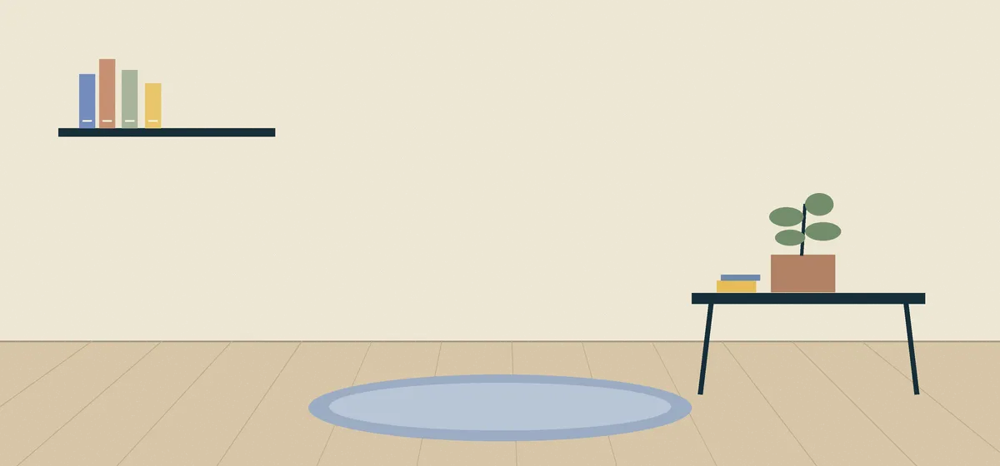

TonAPI / price report
Not loadedReported USD estimate / 1 EGOR
—
- 24h change
- —
- 7d change
- —
- 30d change
- —
No report received this visit.
A CLOSER LOOK AT EGOR
Read the reports. Check the source. Take your time.
No wallet. No rush. Just a closer look.
A LITTLE LIFE, RIGHT HERE

Make yourself at home.
Settling inHis home. His rhythm. Drag the book, cup or gamepad; tap to move, or focus and use arrow keys. He may put them back. Time travel previews his routine, not token prices. Activities are illustrated vignettes, not a simulation of real work. No camera, microphone or location access. All complaints are fictional.
THE ROOM WAS ONLY THE BEGINNINGThere’s something outside.Three sleeping lights. One blue thread. Step through →Playable local prototype · No wallet · Temporary geometryOne provider. Two endpoints. No hidden fallback.
TonAPI is contacted automatically while reports and this tab are visible, sharing connection information including your IP address. Refresh runs at most once per minute per endpoint; errors and rate limits may delay it. Uncheck automatic refresh or stop requests at any time. Reports stay only in this page’s memory. No wallet connection, API key or embedded chart.
Waiting for reports to be visible. TonAPI reports load automatically.
Reported USD estimate / 1 EGOR
—
No report received this visit.
Reported holder addresses
—
No report received this visit.
A recent response is not a live trade. TonAPI’s rates are informational estimates from indexed data and liquidity pools. Receipt times use your device’s clock; the underlying observation time is unknown. The two reports are not proof of one synchronized blockchain state.
TonAPI supplies the figures. Tonviewer is an inspection link.
Requests go directly from your browser to TonAPI. The rates response must contain the configured token key; token metadata must match the raw contract address and 9 decimals. These checks identify the requested asset, not the accuracy of every figure.
Contract: EQAO_tYpLbPq-GOXegYTYtFaQ0tMkxLBxzYF8cUCGGWAj_aA
Tonviewer opens only when you follow its link. We do not fetch or display Tonviewer figures. No liquidity, volume, market cap or historical chart is inferred from these two TonAPI responses.
Requests time out after 12 seconds. Refreshes are spaced by at least one minute per endpoint; rate limits pause that endpoint for at least five minutes. Automatic refresh pauses when this section or tab is hidden. Uncheck it or stop requests at any time; retry after an error is manual. Stop requests cancels pending reads.